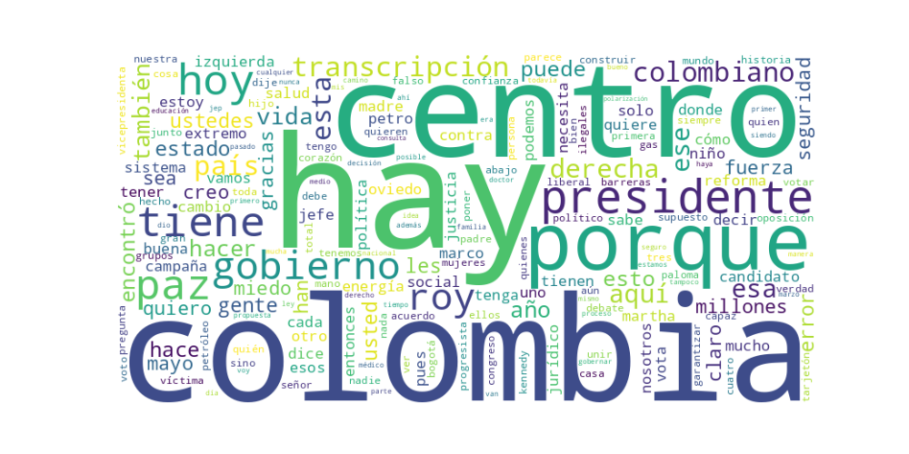

Seguidores: 205,398
Fecha del Análisis: Noviembre 2024
Plataforma: Instagram (Corpus de publicaciones)
El estilo comunicacional del candidato Roy Barreras es predominantemente informal y cercano, dirigido a crear una conexión emocional con el electorado. Utiliza un lenguaje coloquial y popular, con frecuentes apelaciones afectivas (“gracias infinitas”, “corazón”, “juntos”). Aunque en ocasiones recurre a términos técnicos o institucionales (especialmente al mencionar su experiencia legislativa o temas como el “Marco para la Paz”), el discurso está estructurado para ser accesible. Se presenta como un conversador directo, mediante formatos como “cenas en casa” o interacciones en vivo, lo que refuerza una imagen de apertura y transparencia.
Unidad Nacional y Centro Político:
El tema central de su discurso. Insiste en la necesidad de superar la polarización (“derecha vs. izquierda”) y construir un “centro” que una al país. Ejemplo: “Colombia no necesita más divisiones entre derecha o izquierda… hoy el país necesita unión, diálogo y liderazgo responsable.”
Seguridad y Gobernabilidad:
Aborda la seguridad como prioridad, criticando tanto la “mano dura” asociada al pasado uribista como la “laxitud” de la Paz Total. Propone un Estado fuerte pero legítimo. Ejemplo: “El estado tiene que recuperar el control del territorio con fuerza legítima, pero sin falsa seguridad como la de los falsos positivos.”
Salud y Servicios Públicos:
Como médico, enfatiza la crisis del sistema de salud y promete soluciones concretas. Ejemplo: “La salud no puede esperar… yo sí sé cómo hacerlo, lo demostré cuando presidí el Congreso.”
Paz y Proceso de Paz:
Reivindica su rol en el Acuerdo de Paz de 2016 y critica la metodología de la “Paz Total”. Ejemplo: “Faltó método… no basta la buena fe, hay que hacer acuerdos con un marco jurídico sólido.”
Economía y Desarrollo Productivo:
Propone reactivar la economía mediante inversión en infraestructura, agroindustria y transición energética “realista”. Ejemplo: “No podemos dejar la riqueza enterrada y la nevera de los colombianos vacías.”
El tono es crítico pero propositivo. Combina la denuncia de los extremos (“derecha disfrazada”, “izquierda radical”) con un llamado esperanzador a la unidad. Muestra confianza en su experiencia (“yo sé cómo hacerlo”) y un sentimiento de urgencia frente a la crisis institucional. Hay un matiz emocional y personal, especialmente cuando habla de su historia familiar o de víctimas del conflicto.
La estrategia comunicacional de Roy Barreras apunta a posicionarse como la alternativa de centro viable entre dos polos percibidos como extremos. Se dirige a un electorado cansado de la polarización, especialmente a votantes moderados, liberales y sectores progresistas que buscan estabilidad. Su discurso busca evocar confianza a través de la experiencia (médico, negociador de paz, presidente del Congreso) y empatía mediante narrativas personales (origen humilde, historia de su madre). El objetivo último es presentarse como el unificador que puede “sanar heridas” y garantizar gobernabilidad, apelando al miedo a la fractura nacional y a la nostalgia por un liderazgo conciliador.
Reporte de Análisis Estratégico de Comunicación Política
1. Resumen del Patrón de Éxito: El patrón de éxito se basa en una comunicación centrada en la esperanza y la unión, presentada con un tono moderado, conciliador y propositivo. Los videos no destacan por la confrontación agresiva ni el populismo emocional extremo, sino por proyectar la imagen de un estadista sereno y capacitado, que ofrece soluciones concretas y un proyecto nacional inclusivo. La fórmula combina un mensaje de superación de la polarización con propuestas específicas y llamados a la acción electoral, todo envuelto en un lenguaje accesible pero de cierto tono cultural e intelectual.
2. Tácticas de Comunicación Clave: * Apelación a la Unidad y Sanación: La táctica más recurrente es posicionarse como el antídoto contra la polarización y el conflicto. Usa frases como "unir y sanar", "no es tiempo de polarización ni de odio", y "gobierno de unión" para definir su oferta política central en oposición implícita a un contexto de división. * Llamados a la Acción Electoral Claras y Repetitivas: Sus mensajes más directos incluyen instrucciones específicas para votar ("Pidan el tarjetón... marquen abajo y en el centro: Roy Presidente"). Esto transforma el engagement en movilización concreta, cerrando el círculo entre la emoción y la acción. * Validación por Mérito y Cultura (Legitimación No-Política): Se presenta a sí mismo más allá del político tradicional. Al mencionar su maestría en la Universidad de Salamanca y el lanzamiento de su novela con una editorial prestigiosa, apela a una legitimidad intelectual y cultural. Esto construye una imagen de profundidad y solvencia personal, atrayendo a votantes que valoran la formación y el mérito. * Enfoque en Sectores Específicos con Reconocimiento Emotivo: Se dirige a grupos concretos (campesinos, colombianos en el exterior, paneleros) reconociendo su esfuerzo y dignificando su labor ("el esfuerzo madrugador de miles de familias"). Esto crea conexiones emocionales fuertes con nichos de votantes que se sienten vistos y valorados personalmente.
3. Temas de Mayor Resonancia: * La Unidad Nacional y la Superación del Conflicto: El tema central y más repetido es la promesa de unir a un país fracturado. * El Desarrollo Concreto y la Obra Pública: Propuestas tangibles como "construir tres nuevas ciudades" generan una narrativa de progreso y futuro material. * El Reconocimiento del Campo y lo Rural: Mensajes dirigidos al campesinado y a productores como los paneleros resuenan al conectar con la identidad y la economía rural. * La Conexión con la Diáspora Colombiana: El enfoque en los más de 10 millones de colombianos en el exterior apela a un electorado numeroso y a menudo emocionalmente vinculado. * La Cultura y la Educación como Credenciales: El tema de su novela y su formación académica, aunque aparentemente no político, funciona como un poderoso elemento de distinción y prestigio.
4. Perfil de la Audiencia Implícita: El discurso apunta a una audiencia moderada, cansada del conflicto político tradicional y con aspiraciones de estabilidad y progreso. Habla tanto a su base leal (reconociendo sectores específicos) como, crucialmente, al votante indeciso o desencantado que busca una alternativa fuera de los extremos. El uso de un lenguaje claro, pero con pinceladas intelectuales, sugiere que también busca conectar con clases medias urbanas educadas y profesionales que valoran el mérito y la cultura. No es un discurso predominantemente juvenil o radical, sino uno que busca la amplitud y el centro del espectro político.
5. Conclusión Estratégica: La clave fundamental del poder de su discurso es la combinación de una oferta emocional de reconciliación nacional con la proyección de solvencia técnica e intelectual. Se diferencia del discurso político tradicional al evitar el ataque visceral directo y, en su lugar, enmarcar la elección como una elección entre el conflicto pasado (representado por "los extremos") y un futuro de unidad y desarrollo que él encarna. Su potencia radica en presentarse no solo como un político, sino como un gestor culto y unificador, ofreciendo tanto paz emocional como progreso material. Es una estrategia que busca despersonalizar la confrontación (atacando "los extremos" en abstracto, no siempre a individuos) mientras personaliza positivamente su candidatura con logros extracurriculares y cercanía sectorial.

Caption: Sin campesinos no hay patria, no hay futuro…
Likes: 193 | Comentarios: 26 | Reproducciones: 3,291
Ver en InstagramCaption: Los colombianos no quieren estar condenados al radicalismo ni a los extremos. No quieren que el país se fracture ni se divida. Ya tuvimos suficiente de eso… Por eso, mi propósito ha sido y será unir y sanar.
Likes: 141 | Comentarios: 54 | Reproducciones: 2,442
Ver en InstagramCaption: Queridos compatriotas colombianos en el exterior, yo sé el esfuerzo que ustedes hacen. Por eso, mi gobierno garantizará una vida más digna y una mayor conexión con Colombia para los más de 10 millones de connacionales que viven fuera del país.
Likes: 178 | Comentarios: 21 | Reproducciones: 3,313
Ver en Instagram